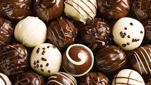

Maria Mercedez
Trufa de chocolate é um tipo de doce feito com chocolate, onde é colocado um recheio feito geralmente de chocolate, creme de leite e conhaque, junto com mais algum recheio, como noz, avelã, gotas de licor ou frutas cítricas. Recebeu este nome em analogia a trufa, um cogumelo subterrâneo que é consumido há mais de três mil anos, devido ao seu tamanho, cor e pelo fato de que ao ser recolhido vir envolto em terra, assim como a trufa de chocolate é envolta em cacau em pó.
É coberto por chocolate e opcionalmente envolta no cacau em pó. São consideradas um símbolo refinado de cortesia.Sabia que a trufa foi criada na por acidente? Atualmente elas possuem diversas variações e modos de preparo. Seu recheio vai da criatividade do doceiro: pode ser mousse, café, morango ou o que mais quiser. Divirta-se expetimentando os diversos sabores!